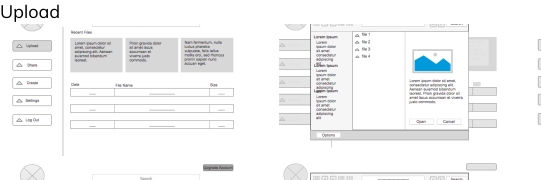
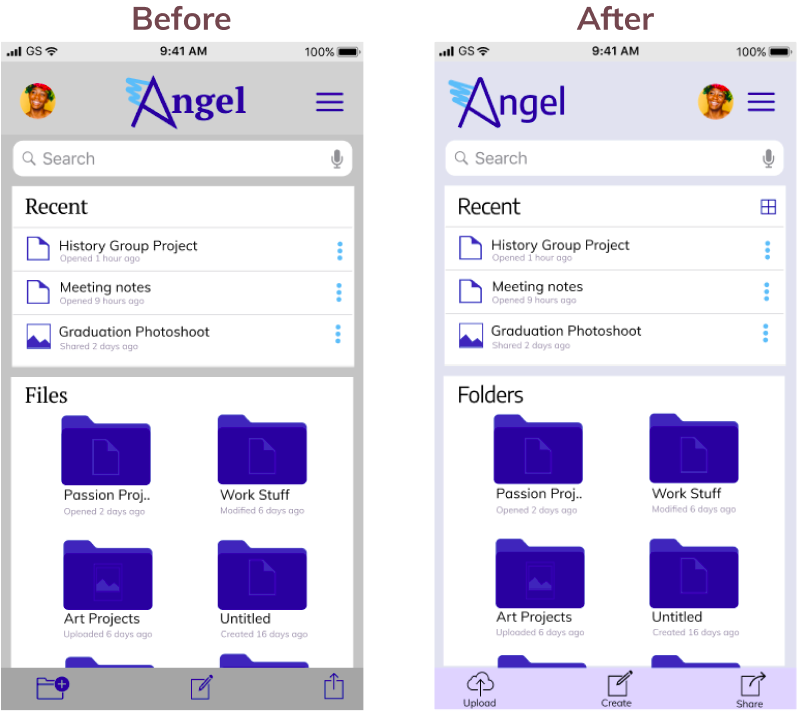
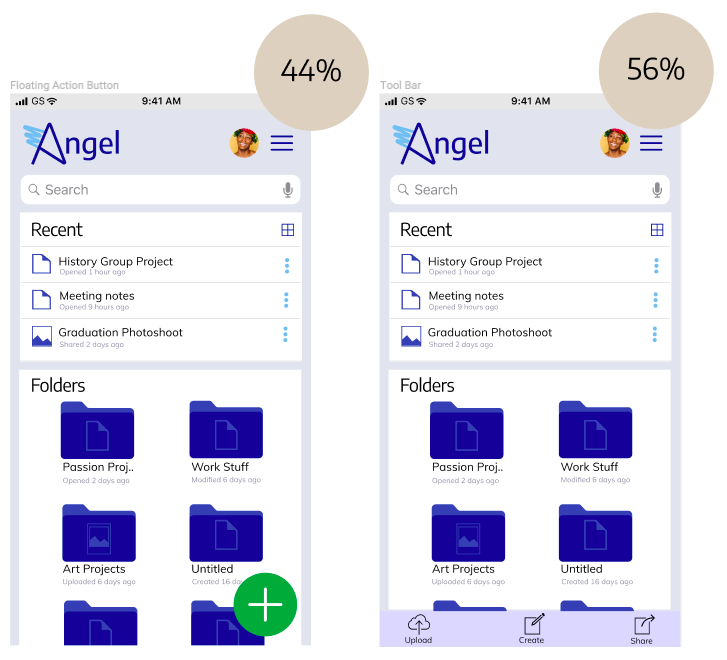

Angel Cloud Storage
My first large-scale design project was on the topic of cloud storage solutions. Although the cloud storage market is dominated by tech giants such as Google, I decided to create a security based product after careful user research and market analyses.

Duration
16 Weeks

Design Roles
UX Research, UI Design, Branding, User Testing

Tools
Axure, Figma, Invision, Usability Hub
OVERVIEW
Angel is a mobile and desktop application designed to provide a safer way to utilize content on the cloud. In a time of data breaches and unethical marketing practices, it is imperative for there to be a transparent service that offers simple and effective ways to keep files out of the hands of unauthorized users.
DISCOVERY
Project Parameter
The client brief was broad and did not specify a name, brand, or a target market for this project. It mainly called for creating a compelling and user-friendly cloud storage service from scratch. So I took upon this challenge to study the market as well as users needs to guide the direction of this product.
Problem
The core problem with existing cloud storage tools is that they don’t prioritize user security and often lack transparency.
Solution
To ensure that users understand the measures Angel puts in place to secure their content, I laid out three main ways they can store and share their files. These are by:
- allowing them to choose how they share content
- offering an automatic logout system
- assuring users that their information is stored safely
RESEARCH
User Survey
After clarifying the project scope, I began my research by conducting a google survey to understand the utilization of existing cloud storage services and to learn of any user concerns or frustrations that can be resolved through this app. The result were as follows:


Although my survey results revealed that there was no clear indication that users were unhappy with their chosen cloud storage service provider, some had security concerns when it came to utilizing content on the cloud.
Competitive Analysis
While my survey had been generating responses, I had begun studying my competion. My aim was to understand the internal and external factors that were influencing some of the main stream cloud storage providers. I chose to study two market leaders (Google Drive and Dropbox) and one less known storage provider, Sugar Sync.

Analyzing my competition solidified my survey statistics in that there was room to elevate security. Users wanted assurance that their files are stored safely on the cloud while maintaining an affordable plan.
INFORMATION ARCHITECTURE
User Personas
User Flows
Then, I created user flows to break down some of the paths users would need to take to complete key tasks such as signing up, uploading, creating and sharing content.

User Stories
Next, I wrote a user story with different users in mind. I identified 40 tasks in total that new, returning as well as all users would want in a new cloud storage solution. After compiling those tasks, I prioritized them in order of importance.

Sketches
After completing the user story, I sketched out my idea for a cloud storage solution and tested the basic process of uploading, creating, and sharing content with users. I then turned my paper sketch into wireframes and ran another round of test only to find minor design flaws with the sign up process. My participants found completing key tasks such as uploading and sharing content to be “straightward”.

Wireframes

VISUAL DESIGN
Branding: Name, Logo, Style Guide
I then moved on to branding my cloud storage services. I performed a mindmap exercise to brainstorm names and decided to go with the name ‘Angel’ as it related to my brand strategy. Angel seemed to be a memorable name that symbolized the protection and security this service promises to offer.

I continued my pencil and paper ideation to sketch out potential logomarks. Once I had a good idea of the direction I wanted to take with the simple “A” shape, I turned my sketches into digital designs using Figma.

In order to maintain consistency, I defined how the logo, color, typography and other assets are to be used in reference to this cloud storage service.

High Fidelity Mockups
After solidifying branding for Angel, I applied visual components to create high fidelity mockups.

Usability Testing
I then conducted both in-person and remote usability tests to obtain feedback on the various components and features I incorporated into my mockups. After several rounds of tests, I realized that I needed to incorporate additional security features. Some of the insightful feedback I received from testers included the automatic logout system making them feel safer compared to other cloud storage services. On the other hand, they critisized the asthetics as they pointed out that the serif brand typeface made the interface look outdated while the design of my icons in the tool bar were confusing. In addition, I recieved a comment that the gray background shade seemed “too dim”. Taking these constructive criticisms into consideration, I created the interface displayed on the right after several itterations. My last round of usability testing seemed to please users as they found the upgraded icons easy to understand and the improved interface “refreshing”.
Some testers mentioned that certain features like the session timeout warning could be more prominent, especially in the desktop version of my mockup. After receiveing this feedback, I incorporated a warning icon and highlighted the timer for users to better notice the warning without having to read through the description.

Preference Testing
Before wrapping up my mockup designs and rolling out my final prototype, I preference tested a few key areas of this product. One in particular was to see if a floating action button (FAB) would be more functional for users to easily locate the ‘upload’ icon.
Question: On your dashboard, do you prefer having the floating action button to upload content or the tool bar with the 3 options of uploading, creating, and sharing content?
Although some testers preffered a single icon to locate the most common action of uploading files to their cloud storage, the majority preffered the tool bar. Participants mentioned that they liked having “options” laid out in the dashboard. Depending on the highest rated choice and reasoning behind users’ preferences, I implemented their feedback into my final design decisions.
CONCLUSION
The main takeaway for me was how imperative testing is especially in the beginning phase of the design process. Putting multiple initial ideas in front of testers early on during the wireframe phase can save tremendous amount of time as opposed to introducing new ideas later on during the mockup stage. Even though I did not test enough ideas as I could have right after completing my wireframes, I was able to incorporate essential iterations to my prototypes through preference and usability testing.